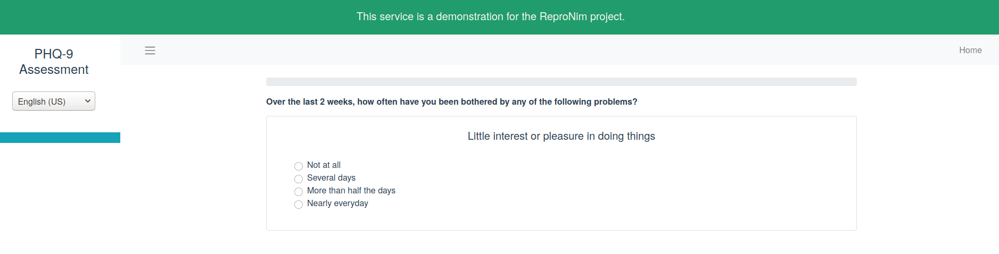

Creating a new protocol
Creating a protocol from scratch
Setting the stage
We first need to create some folders to host the schema that will represent all our questionnaires.
# Type this in a terminal window
# FYI: this line starts with #
# it is comment and it will not be executed
# if you copy paste it in the command line
# Creating the directory for the depression neuroimaging study
mkdir depression_nimg_schema
# Move into the directory
cd depression_nimg_schema
Now let's create the protocols folder, a protocol file named after our study.
Ok so now we are ready to start putting some content into those files.
Open the depression_nimg_schema.jsonld with a text editor and add the following content into it.
To explain a bit what all of this means:
@contextgives the URL where we can find the "definitions" of terms used in the reproschema. It is itself a JSON file that you can view directly.@typejust says what type of entity this JSON-LD file describes. In this case it is aprotocolentity as defined by the reproschema.@idis the identity of this entity, its unique identifier.
You can then use the preferred label field and the description to give more human readable ways to describe this entity.
You must also specify the version of the schema you are using.
Landing page
Let's now take care of adding a landing page to the list of assessments our participants will have to fill in.
Let's create a markdown readme file in the protocols folder.
Add some content in markdown to it just to get things started, like for example
Now we want to add this file to our protocol and make it the landing page for the english version of this study. So the content of your protocol file should now read like this.
A note about relative paths
Reproschema allows for the use of relative paths which means that in the example above the landing page @id being "README.md" means that the README.md and depression_nimg_schema are in the same folder.
If the README.md had been in the parent directory, the @id of the landingPage section would have read "@id": "../README.md".
Add a first assessment
OK now we want to add a questionnaire to assess the severity of the depression of our participants.
The first thing to do is to browse through the library of assessments that already exist on the dedicated repronim repository.
It seems that we can use the PHQ-9 that self describes as a "Brief Depression Severity Measure".
The schema that describe the PHQ-9 activity can be found here.
If you want to visualize this activity on its own, you can use the reproschema-ui. To do that you can point the UI to the raw content of this activity.
To get access to the raw content of that activity you must click on the Raw button on github once you have opened its page.
This will open this URL: https://raw.githubusercontent.com/ReproNim/reproschema-library/master/activities/PHQ-9/PHQ9_schema.
You can then pass the the URL of raw content to the UI using the following template:
So in the case of the PHQ-9, it would give this URL that we copy-paste in a browser to view the activity on its own.
https://www.repronim.org/reproschema-ui/#/activities/0?url=https://raw.githubusercontent.com/ReproNim/reproschema-library/master/activities/PHQ-9/PHQ9_schema
You should now be able to see something like this and browse directly through the content of the activity.

OK now that we know what we need to add to our protocol, let's add it our schema.
To do this, the content of your depression_nimg_schema.jsonld should now look like this.
What did we add ?
Let's just highlight the things that have changed.
We have added a ui and an order fields.
ui is for things related to the user interface and contains addProperties where we will be listing all the assessments that we add to our protocol.
Each assessment is represented by an activity that is given a variableName and a prefLabel. The latter will be used as the name to display on the UI in english.
The field isAbout is the URL to point to the schema of that activity.
The field order is there to indicate which activity should be presented first, second...
Making sure you have a valid JSON file
Json files can get a bit long and you might sometimes forget a coma of a closing square brackets, so to make sure that your JSON file is correctly formatted you can use a linter. For example, you can test individual files on the json linter website.
JSON-LD expansion
You might notice that rl:PHQ-9/PHQ9_schema does not look like a typical URL and clearly does not match the one we fed the UI earlier (https://raw.githubusercontent.com/ReproNim/reproschema-library/master/activities/PHQ-9/PHQ9_schema).
Well this is because we have defined, in the @context part of our JSON-LD, that the rl from rl:PHQ-9/PHQ9_schema will actually stand for https://raw.githubusercontent.com/ReproNim/reproschema-library/master/activities/.
This shorthand makes it faster for us to write URL but the UI will know how to expand this into an actual URL.
Similarly the reproschema:Protocol in "@type": "reproschema:Protocol" expands in http://schema.repronim.org/Protocol because reproschema has been indirectly defined in the context of depression_nimg_schema.jsonld.
To be more precise reproschema is defined in the base file which is part of the context of the generic file that our protocol points to.
Starting to put things online to see how they look
So now we want to put things online and see how things look.
To do that we will use Git and Github.
Let's first initialize a repository in the folder where we have have been working.
# Type this in a terminal window
git init . # the dot signifies the directory where you currently are
Now we tell git to make a snapshot of the current state of your folder.
# Type this in a terminal window
git add --all # tell git to include all the new changes into the next snapshot
git commit -m 'add protocol and README' # make a first snapshot of your protocol
Now to move things to a github repository, you need to go and create an empty repository to host the folder and files you have created.
The repository should have an URL that resembles this one where <YOUR_USERNAME> is your actual Github username:
You "push" the content of the depression_nimg_schema onto the empty "remote" repository you have just created.
# Type this in a terminal window
# tell git about the existence of this new online repository you have just created
git remote add origin https://github.com/<YOUR_USERNAME>/depression_nimg_schema.git
# Transfer the content there
git push -u origin master
If everything worked normally, you should be able to use the reproschema-ui to visualize your protocol using the following template:
So once again grab the URL of the raw content of your protocol and point the UI to it:
https://www.repronim.org/reproschema-ui/#/?url=https://raw.githubusercontent.com/<YOUR_USERNAME>/depression_nimg_schema/master/protocol/depression_nimg_schema.jsonld
In you own time: add the thank-you activity
For practice you can now add another activity to your protocol: one to thank people for their participation.
You can find it here in the reproschema library.
Once you have changed the depression_nimg_schema.jsonld, you can update the online content with the following git commands.